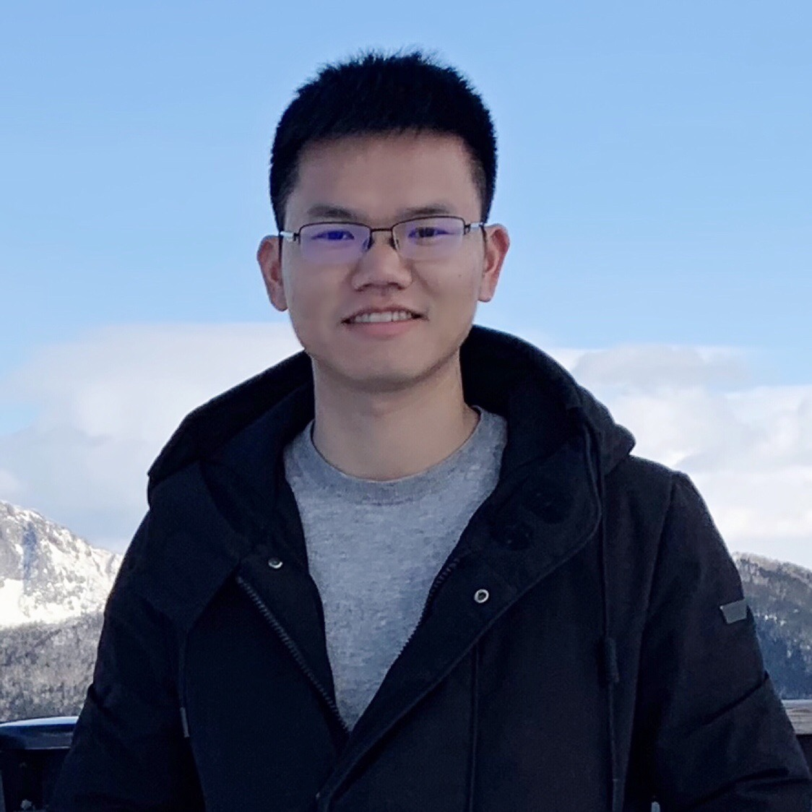

Zuming Huang
Staff Algorithm Engineer
Document Intelligence · Large Multimodal Models · Reinforcement Learning
About Me
Zuming Huang is currently a staff algorithm engineer on the multimodal team at INF Tech since December 2024. Previously, he worked on the multi-modality cognition team at Ant Group starting from April 2019. Before that, he served as an algorithm engineer in the Computer Vision Technology Department at Baidu Inc. He received his Bachelor's degree in Information Engineering from South China University of Technology (SCUT) and his Master's degree in Pattern Recognition and Intelligent Systems from the Institute of Automation, Chinese Academy of Sciences (CASIA). His research interests include Document Intelligence, Large Multimodal Models, and Reinforcement Learning.
Experience & Education
- 2024.12 - Present INF Tech, Multimodal Team, Staff Algorithm Engineer.
- 2019.04 - 2024.12 Ant Group (Hangzhou), Multi-modality Cognition Team, Senior Algorithm Engineer.
- 2017.06 - 2019.04 Baidu Inc. (Beijing), Department of Computer Vision Technology (VIS), Algorithm Engineer.
- 2014.09 - 2017.06 Institute of Automation, Chinese Academy of Sciences (CASIA), M.S. in Pattern Recognition and Intelligence System.
- 2010.09 - 2014.07 South China University of Technology (SCUT), B.Eng. in Information Engineering.
Selected Publications
-
Infinity Parser: Layout Aware Reinforcement Learning for Scanned Document ParsingTechnical Report, 2025. (Project Lead)
-
VL-Rethinker: Incentivizing Self-Reflection of Vision-Language Models with Reinforcement LearningConference on Neural Information Processing Systems (NeurIPS), 2025. (CCF-A, Spotlight)
-
Fine-grained Pesudo Labels for Scene Text RecognitionACM International Conference on Multimedia (ACM MM), 2023. (CCF-A)
-
Look More Than Once: An Accurate Detector for Text of Arbitrary ShapesComputer Vision and Pattern Recognition Conference (CVPR), 2019. (CCF-A, Equal first authors)
-
A Single-shot Arbitrarily-shaped Text Detector based on Context Attended Multi-task LearningACM International Conference on Multimedia (ACM MM), 2019. (CCF-A, Integrated into PaddleOCR)
-
TextNet: Irregular Text Reading from Images with an End-to-End Trainable NetworkAsian Conference on Computer Vision (ACCV), 2018. (Oral)
-
Building Extraction from Multi-source Remote Sensing Images via Deep Deconvolution Neural NetworksInternational Geoscience and Remote Sensing Symposium (IGARSS), 2016.
-
Extraction of Virtual Baselines from Distorted Document Images using Curvilinear ProjectionInternational Conference on Computer Vision (ICCV), 2015. (CCF-A)
Honors & Awards
- Employee of the Year, INF Tech, 2025
- CCF Science and Technology Award, 2023
- Winning Team, ICDAR Competition on SVRD, 2023
- Honorable Mentor, Ant Group, 2021
- Excellent Project, Baidu Vis, 2018
- Best New Employee Award, Baidu Vis, 2017
- Outstanding Student Cadre Award, CASIA, 2016
- National Scholarship, CASIA, 2016
- Best Paper Award, ICCC, 2014
- Student Award of Merit, SCUT, 2013
- National Scholarship, SCUT, 2012
Personal Interest
I'm a massive football fan. I've been playing and following the game since middle school.